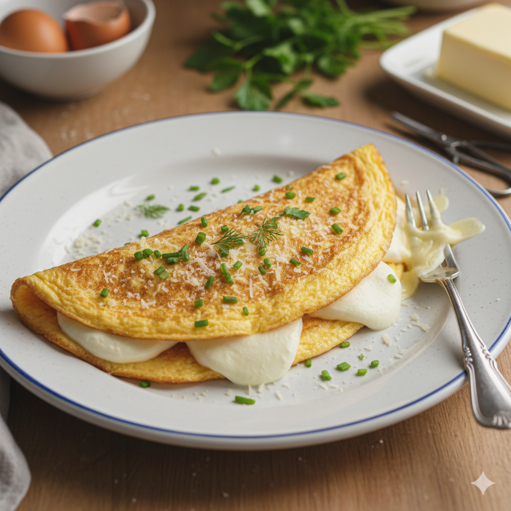

Home
Lasagna
Published in 2025-11-06

Description
Lasagna is a classica italian dish that is loved all over the world.
It's a type of baked pasta dish made with several layers. These layers usually alternate between wide, flat pasta sheets, a rich meat sauce (ofeten a ragu), ad creamy white sauce, traditionally Bechamel. The final, and very important, element is a generous amount of cheese, typically mozzarella or ricotta, which melts and holds the layers together.
The entire dish is assembled in a casserole or baking dish and then cooked in a oven until the cheese is bubbly and the top is golden brown. It is considered a comforting and substantial meal, perfect for family gatherings or holidays.
Ingredients
-
Meat Sauce (Ragu)
- 1 tbsp Olive Oil
- 1 lb (450g) Ground Beef (or a mix of beef and pork)>
- 1 medium Onion, diced
- 2 cloves Garlic, minced
- 1 (28 oz / 790g) can Crushed Tomatoes
- 1 (6 oz / 170g) can Tomato Paste
- 1 cup Beef broth (or water)
- 1 tsp Dried Basil
- 1 tsp Dried Oregano
- Salt and Black Pepper to taste
-
For the Cheese Filling
- 15 oz (425g) Ricotta Cheese
- 1 large Egg
- 1/4 cup Grated Parmesan Cheese
- 2 tbsp chopped Fresh Parsley
- 1/2 tsp Salt
-
Assembly
- 12 Lasagna Noodles (oven-ready or traditional)
- 2 cups (approx. 500g) Shredded Mozzarella Cheese
Kitchen Equipment (Utensils)
- 9x13 inch (23x33 cm) Baking Dish (casserole dish)
- Large Pot (for boiling noodles, if not using oven-ready)
- Large Skillet/Pot (for the meat sauce)
- Mixing Bowl (for the ricotta filling)
- Colander (for draining noodles)
- Measuring Cups and Spoons
- Spatula/Wooden Spoon
Step-by-Step
-
Cook the Meat Sauce (Ragù)
- Sauté: Heat the olive oil in a large skillet over medium-high heat. Add the diced onion and cook until soft, about 5 minutes.
- Brown the Meat: Add the ground beef to the skillet. Cook, stirring and breaking up the meat, until it is fully browned. Drain any excess fat.
- Add Flavor: Stir in the minced garlic and tomato paste. Cook for 1 minute until fragrant.
- Simmer: Add the crushed tomatoes, beef broth, basil, and oregano. Season with salt and pepper. Bring the mixture to a simmer, then reduce the heat to low. Let it cook for at least 30 minutes (or up to 1 hour) for the best flavor.
-
Prepare the Noodles and Ricotta Filling
- Noodles: If you are using traditional lasagna noodles, boil them according to the package directions until al dente (slightly firm). Drain and rinse with cold water to stop the cooking process. If using oven-ready noodles, skip this step.
- Ricotta Filling: In a medium mixing bowl, combine the ricotta cheese, egg, Parmesan cheese, fresh parsley, and salt. Mix until well combined.
-
Assemble the Lasagna
- Preheat: Preheat your oven to 375°F (190°C).
- Grease: Lightly grease the bottom of your 9x13 inch baking dish.
- First Layer (Sauce): Spread a thin layer of the meat sauce over the bottom of the dish.
- Second Layer (Noodles): Arrange a single layer of lasagna noodles over the sauce, trimming them if necessary to fit the dish.
- Third Layer (Ricotta): Spread half of the ricotta filling evenly over the noodles.
- Fourth Layer (Cheese/Sauce): Sprinkle a third of the mozzarella cheese over the ricotta, followed by a generous layer of the meat sauce.
- Repeat: Repeat the layering process once: Noodles → Remaining Ricotta → Mozzarella → Meat Sauce.
- Final Layer: Finish with a final layer of noodles, the remaining meat sauce, and the rest of the mozzarella cheese on top.
-
Bake and Serve
- Bake: Cover the baking dish tightly with aluminum foil. Bake for 25 minutes.
- Uncover: Remove the foil and continue baking for another 20 to 25 minutes, or until the cheese is melted, golden brown, and bubbly.
- Rest: Remove the lasagna from the oven and let it rest for 10-15 minutes before slicing and serving. This allows the layers to set, preventing the lasagna from falling apart.
See more recipes!
Caesar Salad

Omelette-with Cheese and Fine Herbs
